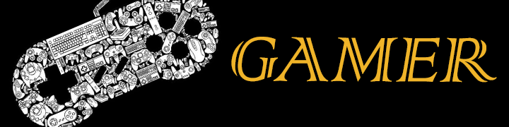

Los clásicos
Para Todos Aquellos Nostálgicos Que Deseen Revivir Viejos Recuerdos O Nuevas Generaciones Que No Tuvieron La Oportunidad De Ponerle Las Manos A Juegos Clásicos. Te Presentamos Una Buena Selección Para Que Con Tu Voto Puedas Escoger Tu Favorito Y El Que Hace Mucho Tiempo Te Divirtió Mucho Más.
Top Mejores Juegos Clásicos 8 Bits
Mejores Juegos Clásicos En 8 Bits